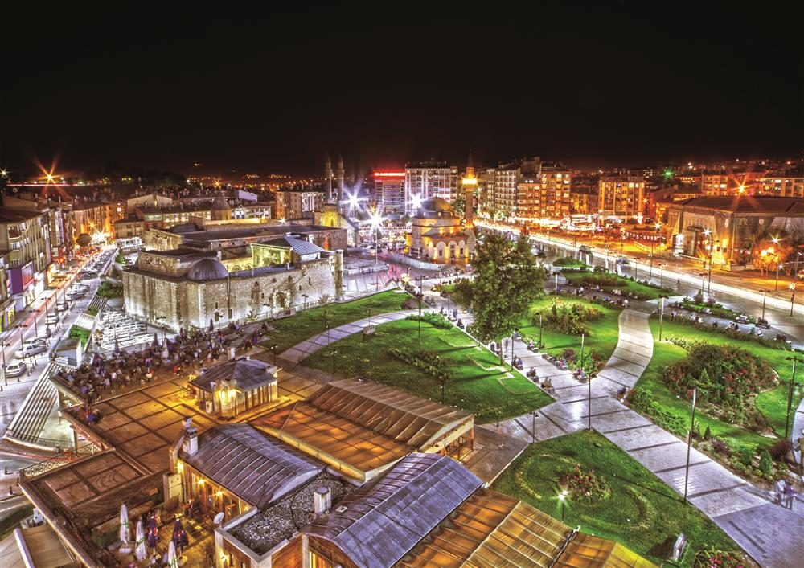
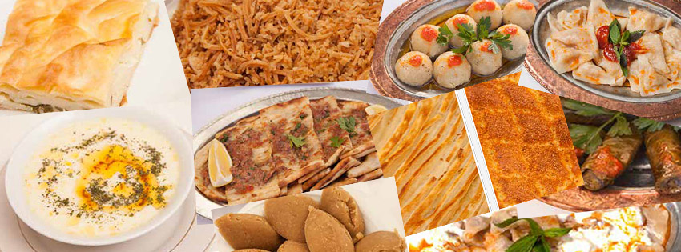

Kültürel Mirasımız
Sivas, Anadolu'nun kalbinde, tarihî ve kültürel derinliğiyle büyüleyen bir şehirdir. Binlerce yıllık geçmişi boyunca pek çok medeniyete ev sahipliği yapmış olan bu topraklar, günümüze kadar önemli izler bırakmıştır. Şehrin kültürel mirası, tarihi eserlerinden folklorik değerlerine kadar geniş bir yelpazede kendini gösterir.
Divriği Ulu Camii ve Darüşşifası, Sivas'ın kültürel mirasının en parlak yıldızlarından biridir. UNESCO Dünya Mirası Listesi'nde yer alan bu muhteşem yapı, Selçuklu dönemi mimarisinin incisi olarak kabul edilir. Çarpıcı işlemeleri ve dini-kültürel önemiyle ziyaretçileri büyüler.
Sivas'ın tarihi dokusunu gözler önüne seren bir diğer önemli eser ise Sivas Kalesi'dir. Şehrin merkezinde yükselen bu kale, geçmişin izlerini taşır ve tarihî atmosferiyle ziyaretçilerini etkiler.
Şehrin sokaklarında dolaşırken, Buruciye Medresesi gibi tarihi yapılarla karşılaşmak mümkündür. Bu medrese, şimdi ise Sivas Arkeoloji Müzesi olarak kullanılmaktadır ve ziyaretçilere şehrin tarihî ve kültürel mirasını daha yakından tanıma fırsatı sunar.
Sivas'ın kültürel mirası sadece tarihi yapılarla sınırlı değildir; aynı zamanda zengin bir folklor ve geleneklerle de örülüdür. Yöresel kıyafetler, el sanatları ve müzik kültürü, şehrin canlı ve renkli kimliğini yansıtır.
Bunların yanı sıra, şehrin meşhur mutfağı da kültürel mirasının önemli bir parçasıdır. Sivas'ın yöresel lezzetleri, geleneksel tatlarla damakları şenlendirir ve yöreye özgü yemekler, şehrin zengin gastronomi kültürünü yansıtır.
Sivas, geçmişiyle bugünü buluşturan bir mozaik gibidir. Tarihi yapıları, folklorik değerleri ve lezzetleriyle bu şehir, ziyaretçilere unutulmaz bir kültürel deneyim sunar. Sivas'ı ziyaret edenler, bu büyülü şehrin derinliklerinde geçmişe yolculuk yapar ve zengin kültürel mirasını keşfetme şansı yakalarlar.